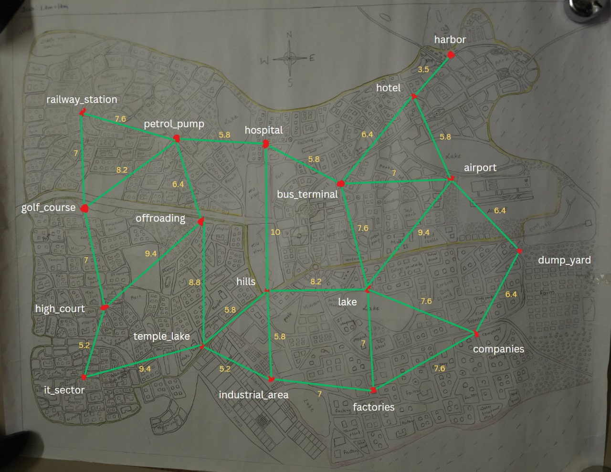

Strong and reliable network connectivity is essential for a modern city. Deploying network towers strategically will improve communication, support smart city infrastructure, and ensure residents and businesses remain well-connected without coverage issues.
SDG 11: Sustainable Cities and Communities
- Target 11.c: Support least developed countries, including through financial and technical assistance, in building sustainable and resilient buildings utilizing local materials.
- Target 11.2: Provide access to safe, affordable, accessible and sustainable transport systems for all, improving road safety, notably by expanding public transport, with special attention to the needs of those in vulnerable situations, women, children, persons with disabilities and older persons.
- Indicator 11.2.1: Proportion of the population that has convenient access to public transport and communication infrastructure, within a defined area.
Objectives
- Ensuring high speed network coverage over all areas in Vyomadri.
- Placing towers such that installation and operational costs is minimum.
- Ensuring high signal strength for users across residential, commercial, and industrial areas.
- Using eco-friendly and renewable energy sources wherever possible.
- Infrastructures that can adapt to future technological upgrades.
Benefits
- Uninterrupted internet and mobile service availability across our city, Vyomadri.
- Cost efficient
- Adapts to future technological upgrades.
- Renewable energy and eco-friendly aligns with sustainable practices.
- Ensuring that communication remains intact during natural disasters.
Algorithm Used
For placing the network towers efficiently in our city, Kruskal's Algorithm can be used to minimize the cost of connecting towers while ensuring coverage.
Algorithm Used
- Algorithm: Kruskal's algorithm
- Need: For placing the network towers efficiently in our city, Kruskal's Algorithm can be used to minimize the cost of connecting towers while ensuring coverage.
- Assumption: Coverage of Network tower is 3 - 12 kms of radius.
- Input: Undirected Graph, where nodes are position of towers and weights represent distance between them.
- output: MST(minimum spanning tree). Data: city_area.txt
Undirected Graph:
Node: Tower location, Weight: distance
Efficiency Analysis:
- Space Complexity: O(m+n)
- Time Complexity: O(nlogn)